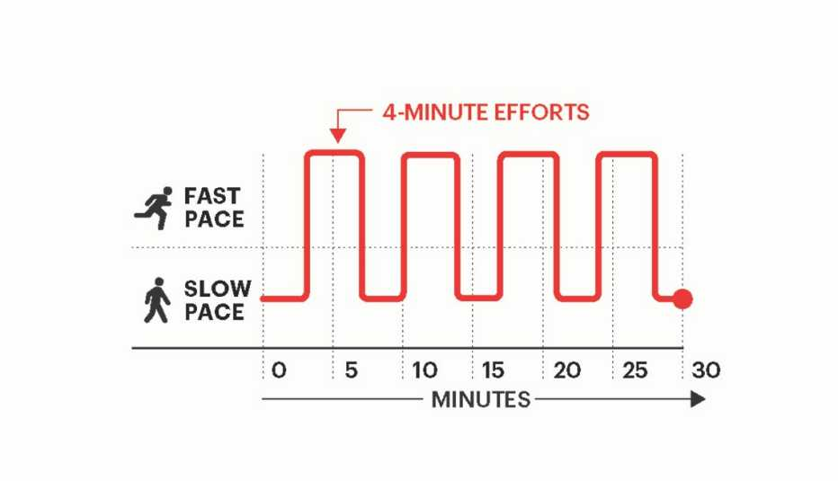

- Walking: Recommended for everyone because of its accessibility and low-impact nature, walking can help shed extra weight.
- Interval training: HIIT (High-intensity interval training) involves short bursts of explosive exercise followed by less-intense exercise.
- Swimming: The average person burns about 9 calories a minute swimming; it's no wonder swimming is considered one of the best ways to lose weight.
